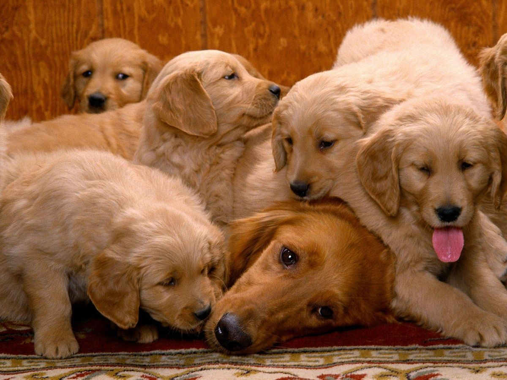
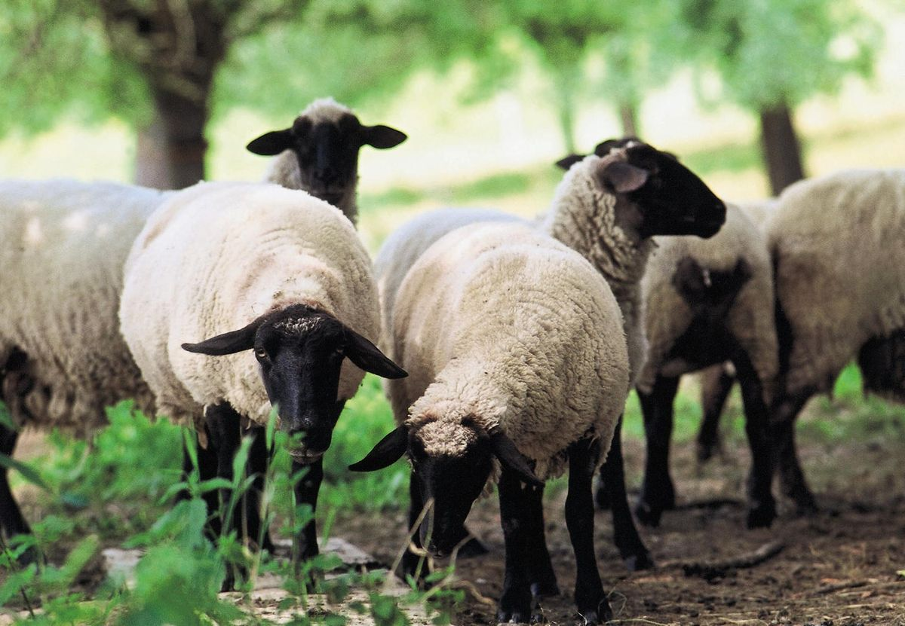
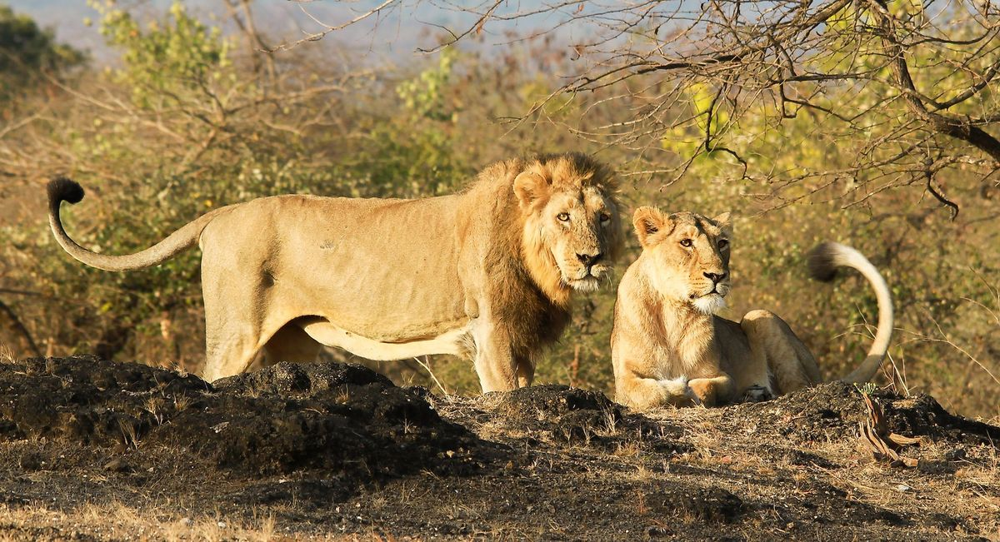

Animals are categorized into two:
These are animals that have been tamed and kept by humans as a work animal,food source or pet. They include;
Now,let's take a look at some domesticated animals
Domestic dogs are mostly kept as pets,though many breeds are capable of surviving on their own, whether it's in a forest or on city streets

Domestic cats are characterized by supple low-slung bodies,finely molded heads,long tails that aid in their balance, and specialized teeth and claws that adapt them admirably to a life of active hunting

Sheep or domestic sheep [Ovis aries] are domesticated,ruminant mammals typically kept as livestock.

The lion is a large cat of the genus Panthera.It has a muscular , broad-chested body,short,rounded head,round ears and a hairy tuft at the end of its tail.

There are three hyena species-spotted,brown, and striped.Spotted hyenas are the largest of the three.They are fairly large in build and have relatively short torsos with lower hindquarters and slopping backs.They have excellent night-time vision and hearing.Hyenas have forelegs and a powerful neck and shoulders for dismembering and carrying prey.

A cheetah is a large cat and native to Africa and central Iran.It is the fastest land animal,estimated to be capable of running at 80 to 128 km/h